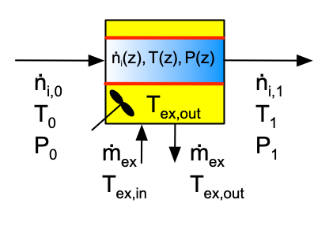

6 Reactor Design Equations
Reactor models are essential for reaction engineering analyses, including the analysis of kinetics data for the purpose of validating a proposed rate expression. A reactor model is a set of equations that relates what goes into a reactor to what comes out. Other parameters that affect the relationship between what goes in and what come out appear within the model. In most cases the model equations cannot be solved analytically, making numerical solution necessary. For this reason, Reaction Engineering Basics assumes that the reactor model equations will always be solved numerically. This chapter describes and discusses the variables needed to model a reactor, the equations that constitute a reactor model, and some aspects of the numerical solution of those equations.
6.1 A Generic Reactor
The four types of ideal reactors used in Reaction Engineering Basics, batch stirred-tank reactors (BSTRs), semi-batch stirred-tank reactors (SBSTRs), continuous stirred-tank reactors (CSTRs), and plug flow reactors (PFRs), were briefly introduced in Chapter 1. Schematic diagrams of stirred tanks, Figure 1.3, and tubular reactors, Figure 1.4, were also presented. Each of these will be discussed in detail later in this chapter. To begin, however, a generic reactor (one that could be any one of those four ideal reactor types) is considered. Doing so helps identify the different kinds of variables needed to model a reactor as well as the equations that are used to describe the relationships between those variables.
6.1.1 Variables Used When Modeling a Reactor
Briefly, every ideal reactor has a compartment that contains reacting fluid. If the reacting fluid needs to be heated or cooled, they may have a second compartment, as described in Appendix D. Depending on the specific physical structure of the reactor, the second compartment is sometimes referred to as the reactor shell or jacket. If the reactor has a shell, an “exchange fluid” will be flowing through it. It is called the exchange fluid because its purpose is to exchange heat with the reacting fluid. The exchange fluid is physically separated from the reacting fluid by a solid wall that prevents the two fluids from mixing. Heat is transferred through the wall separating the two reactor compartments.
Note that the word “reactor” sometimes refers to the entire piece of equipment including both the compartment containing the reacting fluid and the shell. Other times “reactor” refers only to the compartment containing the reacting fluid. This is not likely to cause confusion; the meaning is usually clear from the context of the statement. The physico-chemical properties of the reacting fluid and the exchange fluid, that is their densities, heat capacities, etc., are needed when modeling a reactor. Consequently, fluid properties are one of the groups of variables that appear in the equations used to model a reactor.
Reactor input and reactor output were defined above as what goes into the reactor and what comes out of the reactor. These definitions work fine for the continuous reactors (CSTRs and PFRs) because they have fluid flowing into and out of them as they operate. It also works for the exchange fluid, if present, because it, too, is flowing into and out of the reactor as the reactor operates. However, for BSTRs and SBSTRs the meaning of reactor input and reactor output requires additional refinement. For BSTRs the reactor input refers to what is present within the reaction compartment just before the reactions begin, and BSTR output refers to what is present within the reaction compartment right after the reactions end. The same meanings for input and output apply to SBSTRs, but SBSTR input additionally includes what flows into the reaction compartment while the reactions are taking place. Reaction Engineering Basics does not consider SBSTRs where reacting fluid flow out of the reactor.
The reactor input variables include the input molar amount (or molar flow rate) of every reagent, the input temperature and pressure of the reacting fluid, the mass flow rate of the exchange fluid, and the inlet temperature of the exchange fluid. As used here, “reagent” includes every chemical species that is present at any time within the system. That includes “inert” chemical species that are neither a reactant nor a product in any of the reactions occurring in the system.
The output molar amount (or molar flow rates) of every reagent, output temperature and pressure of the reacting fluid, outlet temperature of the exchange fluid, and the rate at which work is done by the reacting system on its surroundings make up the reactor output variables. There are two differences when compared to the reactor input variables. First, Reaction Engineering Basics assumes there is never accumulation of exchange fluid within the reactor. Consequently the outlet mass flow rate of the exchange fluid is always equal to its inlet mass flow rate. Since the exchange fluid mass flow rate is included among the reactor input variables, it is not included among the reactor output variables.
The other difference is work done by the reacting system on its surroundings. If the reactor has a moving boundary, such as a pistion, it is possible for the reactor to perform mechanical work on its surroundings. That work is included among the reactor output variables. This is important, for example, if the combustion chamber in an automobile engine is modeled as a chemical reactor. The reactors considered in Reaction Engineering Basics are typically vessels located in a chemical processing facility or laboratory. The only moving boundaries associated with those reactors is usually a shaft connected to an agitator that is used to mix the reagents. In all cases in Reaction Engineering Basics, the work associated with agitation of the fluid in a stirred tank is considered to be negligible.
Reactor parameters appear in the reactor model equations. They include the dimensions of the reactor (volume for stirred tanks or diameter and length for PFRs), the shell volume, the heat transfer area, the heat transfer coefficient, and some measure of the reaction time. If there is a packed bed of catalyst particles in the reactor, the bed porosity is also included with these parameters.
The reaction time can be characterized in different ways. For closed systems (BSTRs and SBSTRs) the reaction time variable is measured using clock time. It is the difference between the clock time when the reaction started and the clock time when it ended. It is customary to define an elapsed time, \(t\), as being equal to zero when the reaction starts, in which case the reaction time is equal to the elapsed time when the reaction stops.
In an open system (CSTRs and PFRs), reaction starts when the fliud enters the reactor and it ends when the fluid leaves the reactor. The reaction time then is equal to the amount of time the fluid spends in the reactor. On average, a fluid flowing into a reactor of volume, \(V\), at a volumetric flow rate of \(\dot V_{in}\), is within the reactor for an amount of time, \(\tau\), given by Equation 6.1. In reaction engineering, \(\tau\) is given a special name; it is called the space time. The reciprocal of \(\tau\) is called the space velocity. For open systems the space time can be used as a measure of the reaction time.
\[ \tau = \frac{V}{\dot V_{in}} \tag{6.1}\]
The elapsed time and the space time are explicit specifications of the reaction time. In some cases, the reaction time may be specified implicitly. For example, when a problem specifies the final amount of a reagent, that is an implicit specification of the reaction time. It means that the reaction proceeded for the length of time necessary for the amount of that reagent to change from its initial value to the specified final value.
Finally, reaction properties include kinetics parameters and heats of reaction that appear in models of chemical reactors. Both fluid properties and reaction properties may vary as a function of temperature, pressure or composition. In those cases, equations for calculating the property must be available, and any constants that appear in those equations are included among the reaction and fluid properties Table 6.1 summarizes the variable groups that are used when modeling an ideal reactor.
| Group | Variables |
|---|---|
| Reactor Input | Input molar amounts (or molar flow rates) of every reagent present in the system, input temperature and pressure of the reacting fluid, mass flow rate of the exchange fluid (if there is one), and inlet temperature of the exchange fluid, if there is one. |
| Reactor Output | Output molar amounts (or molar flow rates) of every reagent present in the system, output temperature and pressure of the reacting fluid, rate at which the reactor does mechanical work on its surroundings, and outlet temperature of the exchange fluid, if there is one. |
| Reactor Parameters | Reactor dimensions (typically volume or diameter and length), shell/jacket volume, heat transfer area, heat transfer coefficient, packed bed porosity, and some measure of reaction time. |
| Fluid Properties | Heat capacity of the reacting fluid or heat capacities of each reagent present in the system, heat capacity of the exchange fluid, reacting fluid density, exchange fluid density, reacting fluid viscosity. |
| Reaction Properties | Kinetics parameters for rate expressions, heat of reaction data. |
6.1.2 Equations for Modeling a Reactor
The groups of variables that are needed to describe an ideal reactor were identified above. The purpose of an ideal reactor model is to relate the reactor outputs to the reactor inputs. Mole balances relate the input molar amounts to the output molar amounts, so they are always included in a reactor model. A mole balance can be written for each reagent in the system, whether or not it is present in the reactor input. That includes reagents that are reactants or products in the reactions that are occurring as well as reagents that are neither reactants nor products in any of the reactions. The reagents that do not participate in any of the reactions can be referred to as “inerts.”
Energy balances on the reacting fluid and on the exchange fluid relate their output temperatures to the input variables. An energy balance on the reacting fluid also relates the rate at which the reactor performs work to the input variables. The reacting fluid and exchange fluid energy balances also are normally included in the reactor model equations. As discussed below, there are circumstances where a reactor can be modeled without using one or both of the energy balances.
A momentum balance must sometimes be included in a reactor model for a PFR. When it is included, the momentum balance relates the outlet pressure of the reacting fluid to the reactor inputs. Momentum balances are not needed with any of the stirred tank reactors. The momentum balance accounts for the conversion of kinetic energy associated with the flow of the reacting fluid to thermal energy. While this energy is negligible with respect to the energy balance, it can have a significant effect upon the pressure of the reacting fluid as it flows through a PFR. For the stirred tank reactors, and for a PFR where the momentum balance is not needed, the outlet pressure can be calculated from the other output variables using the equation of state (i. e. using the ideal gas law or assuming liquids to have constant density).
Collectively, the mole balances, energy balances, and momentum balance (when needed) are commonly referred to as the design equations for the reactor. The words “transient” and “steady state” are used to differentiate two modes of reactor operation. When a reactor operates at steady state, one can watch any one point in the reactor and the conditions (temperature, pressure, composition, flow rate, etc.) will not change over time. At a different point in the reactor, the conditions may be different, but they, too, will be constant over time. Putting it another way, when a reactor operates at steady state, the conditions may vary spatially, but they won’t vary temporally (i. e. over time). In a transient reactor one will observe changes in the conditions over time when watching any one point within the reactor. That is, within a transient reactor the conditions will vary temporally (and possibly spatially, too). Note that BSTRs and SBSTR are always transient while CSTR and PFR operating modes can be either steady state or transient. The most general form of the design equations are those for transient operation. As described in subsequent sections, the design equations for steady-state operation represent a simplification of the transient design equations.
In addition to the reactor design equations rate expressions for every reaction taking place it the system are always needed when modeling a reactor. Assuming Arrhenius temperature dependence, the associated pre-exponential factors and activation energies, along with any other parameters appearing in the rate epxressions are included among the reaction properties in Table 6.1. As noted above, physico-chemical properties that appear in the design equations may be functions of temperature, pressure, and/or composition. If so, equations for calculating them are needed, and any parameters appearing in them is included among the fluid properties in Table 6.1.
Table 6.2 summarizes the equations used to model a generic ideal reactor.
| Equations | Purpose |
|---|---|
| Reactor Design Equations | Mole balances on reagents present in the system, energy balance on the reacting fluid, energy balance on the exchange fluid, momentum balance (PFRs), and a differential form of the ideal gas law, as needed. |
| Rate Expressions | Equations for calculating the rate of each reaction taking place within the system. |
| Other Equations | Equations for calculating heat capacities, heats of reaction, density, viscosity, etc., as needed. |
6.2 Determining Which of the Reactor Design Equations are Needed
It is not always necessary to use all of the reactor modeling equations listed in Table 6.2. For example, mole balances do not need to be written for every reagent in the system because the amounts of the reactants and products in the reactions are related through stoichiometry. The amount of an inert reagent is not related to the amount of any other reagent through stoichiometry. If \(N_{ind}\) is the number of mathematically independent reactions taking place in the system, then \(N_{ind}\) mole balances are needed to relate the input amounts of reactants and products to the output amounts. Consequently, the minimum number of mole balances is equal to \(N_{ind}\) plus one mole balance for each inert reagent. Example 6.9.1 illustrates writing, simplifying and solving reactor design equations using the minimum number of mole balances.
Liquid-phase systems often consist of a solvent that contains the reagents as solutes. In systems of this type, sensible heat terms are usually written in terms of the mass-specific or volume-specific heat capacity of the entire reacting fluid. Generally, a mole balance on the liquid-phase solvent is not needed for such systems. If, for some reason, the sensible heat terms are written in terms of molar heat capacities of the individual reagents, then the solvent must be included among those reagents and a mole balance on the solvent would need to be included among the reactor design equations. Example 6.9.4 illustrates writing, simplifying and solving reactor design equations for a system involving a liquid-phase solution.
A momentum balance is only needed when the reactor is a PFR. Even then, some PFR problems indicate that pressure drop is negligible, in which case the momentum balance is not needed.
If a reactor operates adiabatically there will not be an exchange fluid, and consequently an energy balance on the exchange fluid cannot be included among the design equations. Example 6.9.2 illustrates the formulation of a reactor model for an adiabatic reactor. For historical reasons it is worth noting that for adiabatic systems, the energy balance on the reacting fluid can be replaced by an equation for the adiabatic temperature (see Appendix C and particularly Equation C.4). Before computers became commonplace, doing this sometimes made it easier to solve the design equations analytically. It isn’t as important now that powerful personal computers that can solve multiple ODEs are ubiquitous.
If a reactor operates isothermally, the mole balance equations and the energy balance equations are not coupled. The mole balance equations can be solved separately from the two energy balance equations. True isothermal operation of an industrial reactor is not very common, but laboratory reactors that are used to generate kinetics data normally operate isothermally. The energy balances may needed when modeling isothermal reactors, but if the reacting fluid temperature is known, the mole balances can be solved separately from the energy balances, and vice versa. Example 6.9.1 illustrates writing, simplifying and solving reactor design equations for an isothermal reactor.
If the outlet temperature of the exchange fluid is known and constant, the other reactor design equations can be solved independently from the energy balance on the exchange fluid. There are two situations where this can happen. The first is when the exchange fluid exchange undergoes a phase change and exchanges the associated latent heat. Phase changes occur at constant temperature, so, for example, if condensation of saturated steam at 1 atm is being used to supply heat to the reacting fluid, the temperature of the exchange fluid will be constant and equal to 100 °C. Knowing this, all the other reactor design equations can be solved separately from the energy balance on the exchange fluid. (Note that this is only true because Reaction Engineering Basics always assumes that the exchange fluid undergoes either a phase change or a temperature change, but not both.) In this case, the energy balance on the exchange fluid can be solved separately, for example, to calculate the minimum exchange fluid flow rate needed to provide the required amount of energy to the reacting fluid. Example 6.9.4 illustrates writing, simplifying and solving reactor design equations for a system where the exchange fluid phase changes.
The other situation where all the other reactor design equations can be solved separately from the energy balance on the exchange fluid occurs in problems for reaction engineering courses. It is not uncommon for a problem to provide only the temperature of the exchange fluid, but not its flow rate or its inlet temperature. In this case the other design equations can be solved independently from the energy balance on the exchange fluid, while the energy balance on the exchange fluid cannot be used because the problem does not provide sufficient information to use it.
6.3 Exchange Fluid Energy Balance
An energy balance on the exchange fluid is one of the design equations for every one of the non-adiabatic ideal reactors, so it is considered first here. Reaction Engineering Basics assumes that the exchange fluid continually flows through the shell/jacket, and that within the shell/jacket, it is perfectly mixed. The exchange fluid is further assumed to be a pure fluid that either undergoes phase change or temperature change, but not both. The associated latent or sensible heat is transferred to or from the reacting fluid through a common wall that separates them.
As discussed in Appendix D, there are two forms of the energy balance on the exchange fluid: one is used when the temperature of exchange fluid changes, and the other is used when the exchange fluid changes phase. Examples 6.9.3 and 6.9.5 illustrate writing, simplifying and solving reactor design equations where the exchange fluid temperature changes and Example 6.9.4 illustrates writing, simplifying and solving reactor design equations where the exchange fluid undergoes a phase change.
6.3.1 Exchange of Sensible Heat
When the exchange fluid undergoes only temperature change, the energy balance on the exchange fluid is given by Equation D.1, which is reproduced here as Equation 6.2. The term on the left side of the equation represents the accumulation of sensible heat within the reactor shell/jacket. The first term on the right side of the equation represents the rate at which heat is transferred from the exchange fluid to the reacting fluid. The last term represents the change in the sensible heat of the exchange fluid as it first enters the shell/jacket and is immediately heated or cooled to the temperature of the exchange fluid within the shell/jacket. The immediate temperature change is a result of perfect mixing within the shell/jacket.
\[ \rho_{ex} V_{ex} \tilde C_{p,ex}\frac{dT_{ex}}{dt} = -\dot Q - \dot m_{ex} \int_{T_{ex,in}}^{T_{ex}} \tilde C_{p,ex}dT \tag{6.2}\]
In Equation 6.2 the sensible heat terms are written in terms of the mass-specific heat capacity of the exchange fluid, \(\tilde{C}_{p,ex}\). It has units of energy per mass of exchange fluid per degree of temperature change. The sensible heat terms could also be written in terms of either the volume specific heat capacity (energy per volume of exchange fluid per degree of temperature change) or the molar heat capacity (energy per mole of exchange fluid per degree of temperature change). Equation 6.3 shows the three equivalent ways of writing the accumulation term and Equation 6.4 shows the three equivalent ways of writing the term for the sensible heat change.
\[ \rho_{ex} V_{ex} \tilde C_{p,ex}\frac{dT_{ex}}{dt}\ \Leftrightarrow\ V_{ex} \breve C_{p,ex}\frac{dT_{ex}}{dt}\ \Leftrightarrow\ \frac{\rho_{ex} V_{ex} \hat C_{p,ex}}{M_{ex}}\frac{dT_{ex}}{dt} \tag{6.3}\]
\[ \dot m_{ex} \int_{T_{ex,in}}^{T_{ex}} \tilde C_{p,ex}dT\ \Leftrightarrow\ \frac{\dot m_{ex}}{\rho_{ex}} \int_{T_{ex,in}}^{T_{ex}} \breve C_{p,ex}dT\ \Leftrightarrow\ \frac{\dot m_{ex}}{M_{ex}} \int_{T_{ex,in}}^{T_{ex}} \hat C_{p,ex}dT \tag{6.4}\]
If the reactor operates at steady-state, the time derivative is equal to zero and the energy balance on the exchange fluid reduces to the form shown in Equation 6.5. As above, the term in Equation 6.5 representing the sensible heat change can be written using any of the equivalent forms shown in Equation 6.4.
\[ 0 = -\dot Q - \dot m_{ex} \int_{T_{ex,in}}^{T_{ex}} \tilde C_{p,ex}dT \tag{6.5}\]
6.3.2 Exchange of Latent Heat
When the exchange fluid undergoes only phase change, the energy balance on the exchange fluid is given by Equation D.2, which is reproduced here as Equation 6.6. The term on the left side of the equation represents the accumulation of latent heat within the reactor shell/jacket, the first term on the right side of the equation represents the rate at which heat is transferred from the exchange fluid to the reacting fluid, and the last term represents the change in the latent heat of the fraction of the exchange fluid that condenses or evaporates.
\[ \frac{\rho_{ex} V_{ex} \Delta H_{\text{latent},ex}^0}{M_{ex}} \frac{d \gamma}{dt} = - \dot Q - \gamma \dot m_{ex} \frac{\Delta H_{\text{latent},ex}^0}{M_{ex}} \tag{6.6}\]
If the reactor operates at steady-state, the time derivative is equal to zero and the energy balance on the exchange fluid reduces to Equation 6.7.
\[ 0 = - \dot Q - \gamma \dot m_{ex} \frac{\Delta H_{\text{latent},ex}^0}{M_{ex}} \tag{6.7}\]
6.4 Ideal BSTR Design Equations
From the perspective of the reacting fluid, a BSTR is a closed system. Reacting fluid neither enters nor leaves the reactor while it is operating. This is apparent in the schematic BSTR diagram, Figure 6.1. The reacting fluid is shown in blue in that figure, with no reacting fluid entering or leaving. If the reactor has a one, the shell/jacket is an open system; heat exchange fluid continually flows through it. Figure 6.1 depicts a BSTR with a shell/jacket; the exchange fluid within it is shown in yellow. The two agitators in the figure are reminders that the reacting fluid within the reaction compartment and the exchange fluid within the shell are each perfectly mixed. An adiabatic BSTR would not have a shell/jacket.

The most important assumptions when modeling an ideal BSTR are (i) the reaction zone is a closed system, (ii) within the reactor, the reacting fluid is perfectly mixed, (iii) the reaction rates are normalized per unit volume of reacting fluid, (iv) the reacting fluid is an ideal mixture and (v) the reacting fluid does not undergo a phase change while the reactor is operating. A complete listing of the assumptions and a detailed derivation of the mole and energy balances on the reacting fluid are presented in Appendix G. Examples 6.9.1 and 6.9.2 illustrate writing, simplifying and solving reactor design equations for BSTRs.
The mole balance on any one reagent, \(i\), in an ideal BSTR is presented in Equation 6.8. It has only two terms: the term on the left side of the equation represents the rate of accumulation of reagent \(i\) and the term on the right side represents its net rate of generation. The summation in the generation term includes all reactions occurring in the system.
\[ \frac{dn_i}{dt} = V \sum_j \nu_{i,j}r_j \tag{6.8}\]
The energy balance on the reacting fluid within an ideal BSTR is presented in Equation 6.9. The summation on the left side of the equation includes all reagents present in the system, not just reactants and products of the reactions. Similarly, the summation of the right side of the equation includes all reactions taking place in the system.
\[ \left(\sum_i n_i \hat C_{p,i} \right) \frac{dT}{dt} - V\frac{dP}{dt} - P \frac{dV}{dt} = \dot Q - \dot W - V \sum_j \left(r_j \Delta H_j \right) \tag{6.9}\]
The first term on the left side of Equation 6.9 represents the rate of accumulation of energy in the form of sensible heat. It is written in terms of the molar heat capacities of all of the reagents present in the system. That is probably the most common form of this term for a gas-phase reacting fluid. For liquid-phase reacting fluids, the sensible heat accumulation term is often expressed in terms of the mass-specific heat capacity of the fluid as a whole or the volume-specific heat capacity of the entire fluid. Equation 6.10 shows the three equivalent ways of writing the sensible heat accumulation term.
\[ \left(\sum_i n_i \hat C_{p,i} \right) \frac{dT}{dt}\ \Leftrightarrow\ \rho V \tilde C_p \frac{dT}{dt}\ \Leftrightarrow\ V \breve C_p \frac{dT}{dt} \tag{6.10}\]
The second and third terms on the left side of Equation 6.9 represent accumulation of energy associated with expansion or contraction of the reacting fluid. On the right side of the equation, \(\dot Q\) represents the rate of heat input into the reacting fluid. This term is the rate at which heat passes from the yellow exchange fluid in Figure 6.1 through the red internal wall and into the blue reacting fluid. If the exchange fluid is being used to heat the reacting fluid, \(\dot Q\) is positive; if the exchange fluid is being used to cool the reacting fluid, \(\dot Q\) is negative.
In Equation 6.9, \(\dot W\) represents the rate at which the reacting fluid is doing mechanical work on the surroundings. In most cases, the only mechanical work associated with the reacting fluid is work of the agitator as it mixes the reacting fluid. In this case, \(\dot W\) is the agitator power delivered to the reacting fluid, and since it is added to the reacting fluid, \(\dot W\) is negative. If the reacting fluid is able to expand and cause movement of a reactor wall, for example if it caused a piston to move, \(\dot W\) would be positive and equal to the work needed to move the piston.
The final term in Equation 6.9 represents the energy associated with the reactions taking place within the reactor, i. e. the heats of reaction. As previously noted, the summation in this term includes all reactions taking place in the system.
The design equations for a BSTR are initial-value, ordinary differential equations (IVODEs). In order to solve them, the number of dependent variables must equal the number of IVODEs. The differential form of the ideal gas law presented in Equation 6.11 is used when the number of dependent variables exceeds the number of IVODEs.
\[ P \frac{dV}{dt} + V \frac{dP}{dt} - R \left( T \sum_i \frac{dn_i}{dt} + \left( \sum_i n_i \right) \frac{dT}{dt} \right) = 0 \tag{6.11}\]
6.4.1 Common Simplifications of the BSTR Design Equations
Typically, the walls of a BSTR are rigid. For gas-phase reacting fluids, when the reactor walls are rigid, the gas will always occupy the entire reactor volume and that volume will be constant. For liquid-phase reacting fluids, the reactor volume may not be completely full. If there is space above the top surface of the liquid, it is called headspace. In this situation, the volume appearing in the mole and energy balances is the volume of the liquid; it does not include the headspace. However, in Reaction Engineering Basics liquids are always assumed to be incompressible, ideal mixtures. Consequently, the volume is always constant for a liquid-phase reacting fluid, too. Thus, when the walls are rigid, the volume is constant for both gas-phase and liquid phase reacting fluids. In this case, the time derivative of the volume in the energy balance and in the differential form of the ideal gas law is equal to zero, Equation 6.12.
\[ \frac{dV}{dt} = 0 \tag{6.12}\]
In all of the stirred tank models, the pressure change due to hydrostatic head is assumed to be negligible. That is, at all depths below the liquid surface the pressure is assumed to be the same. Because liquid-phase reacting fluids are assumed to be incompressible ideal mixtures, the pressure will be constant as the temperature and composition change. Since the pressure is constant, its time derivative will equal zero, equation Equation 6.13.
\[ \frac{dP}{dt} = 0 \tag{6.13}\]
As already noted, it is often true that the only mechanical work associated with the reacting fluid is that of the agitator. When compared to the magnitude of all of the other terms in the energy balance, this term is virtually always negligible, Equation 6.14. As an example, consider stirring a room temperature glass of water as vigourously as one is able to try to raise its temperature. One could stir as hard as possible and the temperature change would be very, very small.
\[ \dot W = 0 \tag{6.14}\]
It has already been noted that if the reactor operates adiabatically, there will not be an exchange fluid in the reactor. By definition, the rate of heat input is equal to zero for an adiabatic process, Equation 6.15.
\[ \dot Q = 0 \tag{6.15}\]
6.4.2 Ancillary Equations
As previously noted, the design equations for a BSTR are initial-value, ordinary differential equations (IVODEs). In order to solve a set of IVODEs, every quantity appearing in the IVODEs must be expressed in terms of known constants, the independent variable and the dependent variables. The independent variable in the BSTR balance equations is time. Depending upon the specific reactor system, the dependent variables may include the molar amounts of the reagents, the temperature of the reacting fluid, the pressure of the reacting fluid, and the exchange fluid temperature.
When rate expressions are substituted into the mole and energy balances, they will introduce concentrations or partial pressures (for gases), of some reagents. Those concentrations or partial pressures must be expressed in terms of the dependent variables in the IVODEs. This is accomplished using the defining equations for concentration and partial pressure, Equation 6.16 and Equation 6.17.
\[ C_i = \frac{n_i}{V} \tag{6.16}\]
\[ P_i = \frac{n_iRT}{V} \tag{6.17}\]
The rate of heat transfer to the reacting fluid from the exchange fluid can be expressed in terms of the temperatures of those fluids using the overall heat transfer coefficient as shown in Equation 6.18.
\[ \dot Q = UA\left( T_{ex} - T \right) \tag{6.18}\]
Note also that variable quantities appearing in any ancillary equation must also be expressed in terms of known constants, the independent variable and the dependent variables.
6.5 Ideal SBSTR Design Equations
The only difference between an ideal BSTR and an ideal SBSTR is that fluid flows into or out of an ideal SBSTR. A very common situation where fluid flows in, is one where the reaction is higly exothermic, such as when neutralizing a strong acid using a strong base. If a BSTR was used, i. e. if all of the reactants were added at once, it would not be possible to control the temperature due to the very high initial rate of reaction and concommitant release of heat. By using an SBSTR where one of the reactants flows into the reactor, the temperature can be controlled by controlling the rate at which that reactant is added. This mode of SBSTR operation is sometimes called batch-fed or fed-batch operation. It is illustrated schematically in Figure 6.2. This is the only SBSTR operational mode that is considered in Reaction Engineering Basics. The other mode is one where no fluid enters the reactor, but fluid flows out. Most commonly this is done by operating at the boiling point of the reacting liquid, resulting in a two-phase system where the vaporized reagents flow out of the reactor. The presence of two phases in the reactor introduces additional complications that are typically considered in more advanced reaction engineering textbooks.

The most important assumptions when modeling an ideal SBSTR are (i) fluid flows into the reactor, but not out, (ii) the fluid does not change phase upon entering the reactor or within it (iii) within the reactor the reacting fluid is perfectly mixed, (iv) the reaction rates are normalized per unit volume of reacting fluid, and (v) the reacting fluid is an ideal mixture. A complete listing of the assumptions and a detailed derivation of the mole and energy balances on the reacting fluid are presented in Appendix G. Example 6.9.3 illustrates writing, simplifying and solving the reactor design equations for an ideal SBSTR.
Not surprisingly, the mole and energy balances for an SBSTR are similar to those for a BSTR, but with additional terms associated with the fluid stream flowing into the reactor. The ideal SBSTR mole balance is shown in Equation 6.19. The first and last terms are the same as in the BSTR mole balance. The added term represents the molar flow rate of reagent \(i\) into the reactor.
\[ \frac{dn_i}{dt} = \dot n_{i,in} + V \sum_j \nu_{i,j}r_j \tag{6.19}\]
Similarly, the ideal SBSTR energy balance, shown in Equation 6.20, has one additional term that is not found in the BSTR energy balance. The added term is the third term on the right side of Equation 6.20. It represents the heat required to raise or lower the entering fluid from its feed temperature to the temperature of the reacting fluid. Due to the assumption of perfect mixing, this temperature change occurs instantaneously as the fluid enters the reactor.
\[ \begin{align} \sum_i \left( n_i \hat C_{p,i}\right) & \frac{dT}{dt} -V\frac{dP}{dt} - P\frac{dV}{dt} = \dot Q - \dot W \\ &- \sum_i \dot n_{i,in} \int_{T_{in}}^T \hat C_{p,i}dT - V\sum_j r_j \Delta H_j \end{align} \tag{6.20}\]
As in the BSTR energy balance, the two sensible heat terms in Equation 6.20 are written in terms of the molar heat capacities of the reagents in the system. This form is common for gas-phase systems, but for liquid-phase systems it is sometimes useful to express these sensible heats in terms of the mass-specific heat capacity of the reacting fluid or the volume-specific heat capacity of the fluid. Equation 6.10 shows the equivalent ways of writing the heat accumulation term. Equation 6.21 shows equivalent ways of writing the term for the sensible heat added to the feed fluid.
\[ \sum_i \dot n_{i,in} \int_{T_{in}}^T \hat C_{p,i}dT\ \Leftrightarrow\ \rho \dot V_{in} \int_{T_{in}}^T \tilde C_pdT\ \Leftrightarrow\ \dot V_{in} \int_{T_{in}}^T \breve C_pdT \tag{6.21}\]
The differential form of the ideal gas law for an SBSTR is the same as that for a BSTR, Equation 6.11.
6.5.1 Common Simplifications of the SBSTR Design Equations
It is important to understand that for each of the ideal reactor types, the mole and energy balances are written for the reacting fluid volume, not the physical volume of the reactor. Gas-phase reacting fluids expand to fill the physical volume of the reactor, so assuming the reactor walls are rigid, the reacting fluid volume will be constant and the time derivative of the reacting fluid volume will equal zero, Equation 6.12. However, for a liquid, the volume of the reacting fluid will increase as the feed enters the reactor. In other words, as liquid enters the SBSTR, the reacting fluid volume will increase and the headspace will decrease. If the reacting liquid is assumed to be an incompressible ideal mixture, and the feed flows in at a constant rate, the reacting fluid volume will then be given by Equation 6.22. The time derivative of the reacting fluid volume shown in equation Equation 6.23 applies even if the inlet feed rate is variable as long as the liquid is an incompressible ideal mixture.
\[ V = V_0 + \dot V_{in}t \tag{6.22}\]
\[ \frac{dV}{dt} = \dot V_{in} \tag{6.23}\]
Many of the simplifications used for BSTRs are also used for SBSTRs. If the only mechanical work associated with the reacting fluid is that of the agitator, the rate of doing work, \(\dot W\), may be assumed to be negligible, Equation 6.14. If the reactor operates adiabatically, the heat input term, \(\dot Q\), is equal to zero, Equation 6.15. Assuming the liquid to be an incompressible ideal mixture, the time derivative of the pressure, for liquids, is equal to zero, Equation 6.13.
6.5.2 Ancillary Equations
The ancillary equations commonly used with batch reactors are also used with semi-batch reactors. Specifically, the defining equations for concentration and partial pressure, Equations 6.16 and 6.17, can be used to express those quantities in terms of known constants, the independent variable and the dependent variables. Similarly, the rate of heat transfer can be expressed in terms of known constants, the independent variable and the dependent variables using Equation 6.18.
6.6 Ideal CSTR Design Equations
An ideal CSTR is similar to an ideal BSTR and an ideal SBSTR, with the primary difference being that fluid continuously flows in and out of a CSTR. This is represented schematically in Figure 6.3. Notice that because the reacting fluid within the reactor is perfectly mixed, the outlet temperature equals the temperature of the reacting fluid within the reactor. Similarly, the figure shows that the concentrations of the reagents leaving the reactor are the same as they are within the reactor. When writing the ideal CSTR mole and energy balance equations, the “out” is omitted from the subscript to simplify the notation. (The “in” is retained for the feed stream, however, to differentiate it from the outlet stream.)

The most important assumptions of the ideal CSTR model are (i) the reactor is an open system with fluid continually flowing in and out, (ii) within the reactor the reacting fluid is perfectly mixed, (iii) the reaction rates are normalized per unit volume of reacting fluid, (iv) no phase changes occur upon entering or within the reactor, and (v) the reacting fluid is an ideal mixture. A complete listing of the assumptions and a detailed derivation of the mole and energy balances on the reacting fluid are presented in Appendix G. Example 6.9.4 illustrates writing, simplifying and solving the reactor design equations for an ideal CSTR.
A mole balance on reagent \(i\) in a CSTR is presented in Equation 6.24. In contrast to the BSTR and SBSTR balances, the CSTR mole and energy balances are written in terms of the molar flow rates of the reagents, \(\dot n_i\), not the molar amounts, \(n_i\). The three terms on the left side of Equation 6.24 represent the accumulation of reagent \(i\) in the reacting fluid. The first term is accumulation due to a changing outlet molar flow rate of reagent \(i\). The second term represents accumulation due to the volume of the reacting fluid changing and the third represents accumulation due to changes in the outlet volumetric flow rate. The first term on the right side of the equation is clearly the molar flow rate of reagent \(i\) into the reactor and the second term on the right side is its molar flow out of the reactor. The last term represents the moles of reagent \(i\) that are generated by the reactions taking place within the reactor.
\[ \frac{V}{\dot V}\frac{d \dot n_i}{dt} + \frac{\dot n_i}{\dot V}\frac{dV}{dt} - \frac{\dot n_iV}{\dot V^2}\frac{d \dot V}{dt} = \dot n_{i,in} - \dot n_i + V \sum_j \nu_{i,j}r_j \tag{6.24}\]
The energy balance on the reacting fluid within an ideal CSTR is presented in Equation 6.25. The terms in that equation have a one-to-one correspondence with the terms in the SBSTR energy balance, Equation 6.20, representing sensible heat accumulation, two components of the accumulation of energy associated with mechanical work done by the reacting fluid, the rate of heat input into the reacting fluid, the rate at which the reacting fluid does work on the surroundings, the heat required to raise or lower the entering fluid from its feed temperature to the temperature of the reacting fluid, and the energy associated with the reactions taking place within the reactor, respectively. The first term looks different because the ideal CSTR balances are written in terms of molar flow rates and not molar amounts.
\[ \begin{split} \frac{V}{\dot V}\sum_i \left( \dot n_i \hat C_{p,i} \right) &\frac{dT}{dt} - V \frac{dP}{dt} - P\frac{dV}{dt} = \dot Q - \dot W \\&- \sum_i\dot n_{i,in} \int_{T_{in}}^T \hat C_{p,i}dT - V\sum_j r_j \Delta H_j \end{split} \tag{6.25}\]
Once again, the sensible heat terms in Equation 6.25 are written in terms of the molar heat capacities of the reagents in the system. Equation 6.26 shows equivalent ways of writing the first term in Equation 6.25, and Equation 6.21 shows equivalent ways of writing the next to last term in Equation 6.25.
\[ \frac{V}{\dot V}\sum_i \left( \dot n_i \hat C_{p,i} \right) \frac{dT}{dt}\ \Leftarrow\ \rho V \tilde C_p \frac{dT}{dt}\ \Leftarrow\ V \breve C_p \frac{dT}{dt} \tag{6.26}\]
As discussed below, both the volume and the pressure are constant in a gas-phase CSTR. For that reason, a differential form of the ideal gas law is not needed for CSTRs.
6.6.1 Common Simplifications of the CSTR Design Equations
When the CSTR walls are rigid a gas-phase reacting fluid will always occupy the complete physical volume of the reactor. That means that the volume in the mole and energy balances will be constant and the time-derivative of the volume will equal zero, Equation 6.12. Very often this is also true for a liquid-phase reacting fluid. However it is possible for the reacting fluid volume to increase or decrease, along with an equal but opposite change in the headspace. When the liquid is assumed to be an incompressibe, ideal mixture, this only happens if the inlet and outlet volumetric flow rates are not equal.
Ideal CSTRs are almost always assumed to operate at constant pressure. As a consequence, the time derivative of the pressure is then equal to zero, Equation 6.13. Unlike BSTRs and SBSTRs where this was only true for liquid-phase reacting fluids, for CSTRs this is true for both liquid-phase and gas-phase reacting fluids.
As was true for the other stirred tank reactors, when the only mechanical work associated with the reacting fluid is that of the agitator, the rate of work being done by the fluid may be assumed to be negligible, Equation 6.14. As for all reactors, if the reactor operates adiabatically, the rate of heat input is zero, Equation 6.15.
Finally, continuous reactors like CSTRs can operate at steady state. In fact CSTRs are usually designed to operate at steady state. When a CSTR operates at steady state, all of the time derivatives are equal to zero. Steady-state operation is considered separately, below.
6.6.2 Ancillary Equations
When rate expressions are substituted into the CSTR design equations, they introduce concentrations or partial pressures. Before the design equations can be solved, the concentrations or partial pressures must be expressed in terms of the independent and dependent variables. This can be done using their defining equations for open systems, Equations 6.27 and 6.28. In these equations the molar flow rates and volumetric flow rates are the outlet values. The rate needs to be evaluated at the conditions within the reactor, but because a CSTR is perfectly mixed, the outlet concentration, partial pressure, and temperature are equal to the concentration, partial pressure, and temperature within the reactor.
\[ C_i = \frac{\dot n_i}{\dot V} \tag{6.27}\]
\[ P_i = \frac{ \dot n_i}{\displaystyle \sum_i \dot n_i}P \tag{6.28}\]
It important to remember that the volumetric flow rate for gas phase systems can change. The ideal gas law, Equation 6.29, can be used to express the volumetric flow rate in terms of the dependent variables. The rate of heat transfer can be expressed in terms of a heat transfer coefficient as was done for the other stirred tank reactors, Equation 6.18. Equations also are needed for heat capacities, heats of reaction, kinetics parameters, etc. if they are not constant.
\[ \dot V = \frac{\displaystyle RT \sum_i \dot n_i}{P} \tag{6.29}\]
6.6.3 Steady-State CSTR Design Equations
It was noted above that CSTRs are typically designed to operate at steady state, and when they do, all of the time derivatives in the balance equations are equal to zero. The resulting steady-state CSTR mole and energy balances are presented in Equation 6.30 and Equation 6.31.
\[ 0 = \dot n_{i,in} - \dot n_i + V \sum_j \nu_{i,j}r_j \tag{6.30}\]
\[ 0 = \dot Q - \dot W - \sum_i\dot n_{i,in} \int_{T_{in}}^T \hat C_{p,i}dT - V\sum_j r_j \Delta H_j \tag{6.31}\]
When applicable, the common simplifications and ancillary equations identified above for transient CSTRs can also be used with steady-state CSTRs.
6.7 Ideal PFR Design Equations
The ideal PFR is very different from the three ideal stirred tank reactor types. It is not perfectly mixed, but instead the reacting fluid flows steadily from the reactor inlet to the reactor outlet. The reactor is assumed to be cylindrical with a constant diameter, and the reacting fluid is assumed to flow only in the axial direction. The velocity of the flow at any fixed axial position is constant across the full diameter of the tubular reactor. This is called plug flow, and is illustrated in Figure 6.4. If the walls of the reactor were transparent and it was possible to color a disk-shaped portion of the fluid as shown in that figure, the colored fluid would look like a solid disk moving from the inlet to the outlet of the reactor.

In addition, the PFR model assumes that at any one axial position, the reacting fluid is perfectly mixed in the radial direction. As a consequence, there are no composition, temperature or pressure gradients in the radial direction. The composition, temperature, and pressure will change as a function of axial position. This is indicated by a gradient in the blue color representing the reacting fluid in the schematic representation, Figure 6.5. As that figure also shows, heat can be exchanged through the entire cylindrical wall of the reactor since the shell/jacket surrounds it.

The most important assumptions of the ideal PFR model are (i) the reactor is cylindrical with a constant diameter, (ii) the reacting fluid is in plug flow, (iii) there is perfect mixing of the reacting flow in the radial direction and no mixing in the axial direction, (iv) the reaction rates are normalized per unit volume of reacting fluid, and (v) no phase changes occur upon entering or within the reactor. A complete listing of the assumptions and a detailed derivation of the mole and energy balances on the reacting fluid are presented in Appendix G. Example 6.9.5 illustrates writing, simplifying and solving the reactor design equations for an ideal PFR.
A mole balance on any one reagent, \(i\) in an ideal PFR is presented in Equation 6.32. The first term on the left side of the reactor represents the change in the molar flow rate of reagent \(i\) along the length of the reactor. The second term represents the accumulation of reagent \(i\) at any point in the reactor due to change in its molar flow rate while the third term represents the accumulation of reagent \(i\) at any point due to change in the volumetric flow rate of the reacting fluid. The term on the right side of Equation 6.32 represents the generation of reagent \(i\) due to the reactions that are taking place within the reactor.
\[ \frac{\partial \dot n_i}{\partial z} + \frac{\pi D^2}{4\dot V} \frac{\partial\dot n_i}{\partial t} - \frac{\pi D^2\dot n_i}{4\dot V^2} \frac{\partial \dot V}{\partial t} =\frac{\pi D^2}{4}\sum_j \nu_{i,j}r_j \tag{6.32}\]
The energy balance on the reacting fluid in an ideal PFR takes the form shown in Equation 6.33. The first term on the left side of the equation represents the change in sensible heat along the length of the reactor while the second term represents the accumulation of sensible heat at any one point in the reactor. The third term on the left side of Equation 6.33 represents the accumulation of energy corresponding to the work associated with flow at any point in the reactor. The first term on the right side of the equation represents the rate of heat transfer from the exchange fluid to the reacting fluid at any axial position in the reactor. The last term represents the heat associated with the occurrence of the reactions.
\[ \begin{split} \left(\sum_i \dot n_i \hat C_{p,i} \right) \frac{\partial T}{\partial z} +& \frac{\pi D^2}{4\dot V} \sum_i \left(\dot n_i \hat C_{p,i} \right) \frac{\partial T}{\partial t} - \frac{\pi D^2}{4} \frac{\partial P}{\partial t} \\ &= \pi D U\left( T_{ex} - T \right) - \frac{\pi D^2}{4}\sum_j r_j \Delta H_j \end{split} \tag{6.33}\]
The sensible heat terms in Equation 6.33 are expressed in terms of the molar heat capacities of the reagents. Equation 6.34 shows equivalent ways of expressing the term representing the change in sensible heat along the length of the reactor using the mass-specific heat capacity or the volume-specific heat capacity of the reacting fluid. Equation 6.35 does the same for the term representing the accumulation of sensible heat.
\[ \left(\sum_i \dot n_i \hat C_{p,i} \right) \frac{\partial T}{\partial z}\ \Leftrightarrow\ \rho \dot V \tilde C_p \frac{\partial T}{\partial z}\ \Leftrightarrow\ \dot V \breve C_p \frac{\partial T}{\partial z} \tag{6.34}\]
\[ \frac{\pi D^2}{4\dot V} \sum_i \left(\dot n_i \hat C_{p,i} \right) \frac{\partial T}{\partial t}\ \Leftrightarrow\ \frac{\pi D^2}{4} \rho \tilde C_p \frac{\partial T}{\partial t}\ \Leftrightarrow\ \frac{\pi D^2}{4} \breve C_p \frac{\partial T}{\partial t} \tag{6.35}\]
Another difference between the ideal PFR and the ideal CSTR is the possibility of a drop in the pressure of the reacting fluid as it flows through the reactor. It was noted previously that pressure drop in a CSTR is usually assumed to be negligible. While that may be true for an ideal PFR, the friction between the fluid and the reactor walls and between the fluid and the particles making up a packed bed within the reactor can cause some of the kinetic energy associated with the flow to degrade into heat. The effect upon the energy balance is typically negligible, but this degradation of mechanical energy to heat also results in pressure drop. A momentum balance (also called a mechanical energy balance) is used to calculate the pressure drop. The momentum balance equation for an ideal PFR is shown in Equation 6.36.
\[ \frac{\partial \dot V}{\partial t} + \frac{4 \dot V}{\pi D^2} \frac{\partial \dot V}{\partial z} + \frac{\pi D^2}{4 \rho} \frac{\partial P}{\partial z} = - \frac{2 f \dot V^2}{\pi D^3} \tag{6.36}\]
The differential form of the ideal gas law for a PFR is expressed in terms of flow variables, Equation 6.37.
\[ P \frac{d \dot{V}}{dt} + \dot{V} \frac{dP}{dt} - R \left( T \sum_i \frac{d\dot{n}_i}{dt} + \left( \sum_i \dot{n}_i \right) \frac{dT}{dt} \right) = 0 \tag{6.37}\]
6.7.1 Common Simplifications of the PFR Design Equations
If an ideal PFR operates adiabatically, the heat transfer term is equal to zero as shown in Equation 6.38.
\[ \pi D U\left( T_{ex} - T \right) = 0 \tag{6.38}\]
For liquid phase systems that are assumed to be incompressible ideal mixtures the derivative of the volumetric flow rate with respect to axial position is equal to zero, Equation 6.39.
\[ \frac{\partial \dot V}{\partial z} = 0 \tag{6.39}\]
Like CSTRs, PFRs typically are designed to operate at steady state. In the mole, energy, and momentum balance equations for an ideal steady-state PFR, all of the time derivatives are equal to zero. Steady-state operation is considered separately below.
6.7.2 Ancillary Equations
The most common ancillary equations used when modeling an ideal PFR are the same as those used with CSTRs. Concentrations and partial pressures introduced in rate expressions can be written in terms of the dependent variables in the balance equations using Equations 6.27 and 6.28. As with the CSTR, it is important to remember that the volumetric flow rate of a gas-phase reacting system can change. Equation 6.29 is again used to express the volumetric flow rate of a gas-phase system in terms of the molar flow rates, temperature, and pressure. Ancillary equations for heat capacities, heats of reaction, kinetics parameters, etc. are also needed if these quantities cannot be assumed to be constant.
6.7.3 Steady-State PFR Design Equations
The mole and energy balance equations for modeling an ideal, steady-state PFR are generated by setting all of the time derivatives in Equations 6.32 and 6.33 equal to zero. The resulting steady-state PFR mole balance is shown in Equation 6.40, and the resulting energy balance is shown in Equation 6.41. Notice that because none of the variables depend upon time when operating at steady state, the partial derivatives with respect to \(z\) become ordinary derivatives.
\[ \frac{d \dot n_i}{d z} =\frac{\pi D^2}{4}\sum_j \nu_{i,j}r_j \tag{6.40}\]
\[ \left(\sum_i \dot n_i \hat C_{p,i} \right) \frac{d T}{d z} = \pi D U\left( T_e - T \right) - \frac{\pi D^2}{4}\sum_j r_j \Delta H_j \tag{6.41}\]
In some situations the pressure drop in an ideal PFR can be negligible. In that case, a momentum balance is not used when modeling the reactor. If the pressure drop is not negligible, or if it isn’t known whether the pressure drop is significant, a momentum balance is used. The steady-state, ideal PFR momentum balance can take one of two forms. If the reacting fluid is the only thing in the reactor, the steady-state momentum balance shown in Equation 6.42 is used. If the reactor contains solid particles in the form of a packed bed, the steady-state momentum balance shown in Equation 6.43 is used instead. The latter equation is called the Ergun equation, named after Sabri Ergun who first derived it (Ergun 1952).
\[ \frac{dP}{dz} = - \frac{4G}{\pi D^2} \frac{d \dot V}{dz} - \frac{fG^2}{2D \rho} \tag{6.42}\]
\[ \frac{{dP}}{{dz}} = - \frac{{1 - \varepsilon }}{{{\varepsilon ^3}}}\frac{{{G^2}}}{{\rho {\Phi _s}{D_p}}}\left[ {\frac{{150\left( {1 - \varepsilon } \right)\mu }}{{{\Phi _s}{D_p}G}} + 1.75} \right] \tag{6.43}\]
6.8 Numerical Solution of the Reactor Design Equations
In Reaction Engineering Basics, the transient PFR reactor design equations are not used in any analyses. Consequently, in all but two cases, the reactor design equations are a set of coupled, initial-value ordinary differential equations (IVODEs). The numerical solution of sets of IVODEs is discussed in Appendix I. For present purposes, the following points are important.
- The number of IVODEs must equal the number of dependent variables appearing in them.
- To solve a set of IVODEs numerically, equations must be written to calculate every quantity appearing in them from known constants, the independent variable, and the dependent variables.
- The solution of IVODEs begins at a value of the independent variable where the value of every dependent variable is known. These “initial values” must be specified when solving the IVODEs.
- IVODEs are solved by increasing the independent variable in small increments and calculating the values of the dependent variables each time the independent variable is incremented. When solving IVODEs, a “stopping” criterion must be specified to indicate when to stop incrementing the independent variable. The stopping criterion is a value for one of the dependent variables or for the independent variable. When that value is reached the solution is complete and the solver stops incrementing the independent variable.
- The numerical solution of a set of IVODEs is a set of values of the independent variables and each of the dependent variables spanning the range from the initial values to the point where the stopping criterion was satisifed.
One of the two cases where the reactor design equations are not a set of IVODEs occurs when a steady-state PFR is heated or cooled using sensible heat of the exchange fluid and the outlet temperature of the exchange fluid is not known. In this case the design equations are a set of differential algebraic equations (DAEs), specifically a set IVODEs coupled to one algebraic-transcendental equation (ATE). The numerical solution of DAEs is discussed in Appendix L. In this case, the important points with respect to numerical solution of the reactor design equations are almost the same. The differences are (i) that in addition to solving the IVODEs as above, the one additional unknown quantity from the ATE is found and (ii) the equations in the second bullet above can use the unknown in the ATE in addition to constants, the independent variable and the dependent variables.
The other case where the reactor design equations are not a set of IVODEs occurs when the reactor is a steady-state CSTR. In this case, the reactor design equations are a set of ATEs. The numerical solution of sets of ATEs is discussed in Appendix H. The important points with respect to numerical solution of a set of ATEs are as follow.
- A set of \(N\) ATEs can be solved to find the values of \(N\) unknown quantities appearing in them.
- The \(N\) unknowns to be found by solving the ATEs must be specified.
- To solve the set of ATEs numerically, equations must be written to calculate every quantity appearing in them from known constants and the \(N\) unknowns.
Reaction Engineering Basics assumes that the reactor design equations will be solved numerically. There are many, many software packages that can be used to do this. Because different readers will uses different software packages, Reaction Engineering Basics does not present computer code that performs the calculations. It does, however, fully formulate the calculations in a manner that the reader can use to write the necessary computer code for their software of choice.
While there are instances where doing so isn’t necessary, in Reaction Engineering Basics the design equations are always solved numerically to find the reactor output variables (see Table 6.1). That is, when formulating the solution of the design equations, it is always assumed that the reactor inputs, reactor parameters, fluid properties, and reaction properties are known. The reasons for this won’t be discussed here, but it can be noted that in all cases except for steady-state CSTRs (where the design equations are ATEs), this is necessary for numerical solution.
Additional calculations that use the results from solving the design equations are often required to complete an analysis. In Reaction Engineering Basics, this is accomplished by solving the design equations within a reactor response function as described in Chapter 7. The response function is a computer function or subroutine. Later chapters will show how missing reactor inputs or reactor parameters can be passed to the response function so that the design equations then can be solved for the reactor outputs. Once the design equations have been solved within the response function, any other quantities that depend upon the reactor outputs can be calculated and returned by the response function.
6.9 Examples
The examples in this chapter illustrate choosing those design equations that are needed to model the reactors described in the example. In doing so, all summations and continuous products are expanded and any terms that are negligible or equal to zero are eliminated. Solving the design equations presented in these examples would require additional ancillary equations. The solution of the design equations and the ancillary equations needed for doing so will be described and discussed in subsequent chapters.
6.9.1 Modeling an Isothermal BSTR using the Minimum Number of Mole Balances
Gas phase reaction (1) occurs isothermally at a known temperature in an ideal BSTR. Initially the reactor contains only known molar amounts of A, B, and an inert gas, I. The reaction ends after a known amount of time. The rate expression for gas-phase reaction (1) is given in equation (2). The rate coefficient displays Arrhenius temperature dependence.
\[ A + 2 B \rightarrow Y + Z \tag{1} \]
\[ r_1 = k_1 C_A C_B \tag{2} \]
Write the minimum number of reactor design equations, and the associated initial values and stopping criterion, needed to model the composition within this system over time.
This problem doesn’t ask me to calculate anything. It asks me to write the minimum number of design equations for the system. The design equations always include mole balances for each of the inert reagents, so I’ll need a mole balance for reagent I. The minimum number of additional mole balances equals the number of mathematically independent reactions that are taking place. In this case only one reaction is occurring, so I will need one additional mole balance on one of the reactants or products. I’ll write it for reactant A.
The problem also states that the reactor operates isothermally and the temperature is known. That means the mole balances can be solved separately from the energy balances. Momentum balances are not used with stirred tanks. Solving the mole balances will yield the molar amounts vs. time, so the minimum set of design equations consists of a mole balance on I and a mole balance on A (or B, or Y, or Z).
Reactor Design Equations
Equation (3) shows a mole balance on the inert reagent, I, and equation (4) presents a mole balance on reagent A.
\[ \frac{dn_I}{dt} = 0 \quad \Rightarrow \quad n_I = n_{I,0} \tag{3} \]
\[ \frac{dn_A}{dt} = -r_1V \tag{4} \]
Start with Equation 6.8. There is only one reaction, \(j\), so the sum becomes a single term.
\[ \frac{dn_i}{dt} = V \sum_j \nu_{i,j}r_j \quad \Rightarrow \quad \frac{dn_i}{dt} = \nu_{i,1}r_1V \]
The stoichiometric coefficient of reagent I is zero, leading to a trivial mole balance that can be solved analytically.
\[ \frac{dn_I}{dt} = 0 \quad \Rightarrow \quad n_I = \text{constant} = n_{I,0} \]
In the case of reagent A, its stoichiometric coefficient in reaction (1) is -1, which can be substituted into the general mole balance.
\[ \frac{dn_A}{dt} = \nu_{A,1}r_1V = -r_1V \]
The design equation that needs to be solved, equation (4), is an IVODE, and as the problem implies, initial values and a stopping criterion are needed in order to solve it. The instant that the reaction begins can be defined as \(t=0\) and used as the initial value of the independent variable. To solve equation (4), the corresponding initial value of the dependent variable \(n_A\) must be specified. In this problem the initial molar amount of A, \(n_{A,0}\), is known.
A stopping criterion is also needed. Here the problem statement says that the length of time that the reaction proceeded is known. Having defined \(t=0\) as the time when the reaction started, the stopping criterion is that the time equals that known length of time, \(t_f\).
Initial Values and Stopping Criterion
| Variable | Initial Value | Stopping Criterion |
|---|---|---|
| \(t\) | \(0\) | \(t_f\) |
| \(n_A\) | \(n_{A,0}\) |
Prior to the widespread availability of computers it was quite common to formulate reactor modeling equations using the minimum number of mole balances. In a problem like this one where the reactor is isothermal, doing so often makes it possible to solve the IVODE design equation analytically.
It should also be noted that energy balances were not needed here because the problem specifically stated that the composition of the reactor over time was to be modeled. For an isothermal system where the temperature is known, the mole balances can be solved independently of the energy balances. An alternative assignment might have provided additional information and asked the coolant flow rate as a function of time that would be necessary to operate the reactor isothermally. For that assignment the energy balances would be needed, even though the mole balances still could be solved independently of them.
6.9.2 Modeling an Adiabatic BSTR
Gas-phase reaction (1) takes place in an ideal, adiabatic BSTR. It is irreversible and first-order in A, equation (2). The heat of reaction and the heat capacities of the reagents may be assumed to be constant. Initially the reactor contains only reagent A at a known temperature, \(T_0\), and pressure, \(P_0\), and the reaction proceeds until the temperature reaches \(T_f\).
\[ A \rightarrow B \tag{1} \]
\[ r_1 = k_1 C_A \tag{2} \]
Write and simplify the reactor design equations needed to model this system, including the associated initial values and stopping criterion.
I’m asked here to write and simplify the design equations, but not to solve them. In most assignments, the design equations will be solved numerically, and when that is true, I prefer to include a mole balance for every reagent present in the system. Here the only reagents are A and B, so mole balances will be written for each of them. An energy balance on the reacting fluid will also be included in the design equations. Since the reactor is adiabatic, there isn’t an exchange fluid, meaning an energy balance on the exchange fluid will not be included among the design equations. Momentum balances are not used with stirred tanks, so the complete set of design equations will consist of a mole balance on reagent A, a mole balance on reagent B, and an energy balance on the reacting fluid.
Reactor Design Equations
Mole balances on reagents A and B are shown in equations (3) and (4), respectively.
\[ \frac{dn_A}{dt} = - r_1 V \tag{3} \]
\[ \frac{dn_B}{dt} = r_1 V \tag{4} \]
Start with Equation 6.8 and expand the summation. Here there is only one reaction, so the summation reduces to a single term. \[ \frac{dn_i}{dt} = V \sum_j \nu_{i,j}r_j \quad \Rightarrow \quad \frac{dn_i}{dt} = V \nu_{i,1}r_1 \]
The stoichiometric coefficient of A is -1 and that of B is 1. Substitution of those values leads to equations (3) and (4).
An energy balance on the reacting fluid is presented in equation (5).
\[ \left( n_A \hat C_{p,A} + n_B \hat C_{p,B} \right) \frac{dT}{dt} - V\frac{dP}{dt} = - V r_1 \Delta H_1 \tag{5} \]
Start with Equation 6.9 \[ \left(\sum_i n_i \hat C_{p,i} \right) \frac{dT}{dt} - V\frac{dP}{dt} - P \frac{dV}{dt} = \dot Q - \dot W - V \sum_j \left(r_j \Delta H_j \right) \]
There are two reagents in the system, A and B, so the first summation expands to two terms. There is only one reaction occurring, so the last summation reduces to a single term. The volume of a BSTR is constant, so the time derivative of the volume is equal to zero. The reactor is adiabatic, so \(\dot Q\) is equal to zero, and the reacting fluid does no work, so \(\dot W\) is equal to zero (assuming the power associated with agitation is negligible).
\[ \left( n_A \hat C_{p,A} + n_B \hat C_{p,B} \right) \frac{dT}{dt} - V\frac{dP}{dt} - P \cancelto{0}{\frac{dV}{dt}} = \cancelto{0}{\dot Q} - \cancelto{0}{\dot W} -V r_1 \Delta H_1 \]
The pressure in this system is not constant because the temperature will change as the reaction proceeds, and for an ideal gas at constant volume, the pressure will change as the temperature changes.
The design equations are IVODEs, so initial values and a stopping criterion must be specified.
The instant that the reaction begins can be defined as \(t=0\) and used as the initial value of the independent variable. The problem states that initially the reactor contains only reagent A, and \(n_{A,0}\) can be used to represent its molar amount. The initial molar amount of B then is zero. The problem states that the initial temperature is \(T_0\).
The problem states that the reaction proceeds until a temperature of \(T_f\) is reached, so the stopping criterion for this assignment is that \(T=T_f\).
Initial Values and Stopping Criterion
| Variable | Initial Value | Stopping Criterion |
|---|---|---|
| \(t\) | \(0\) | |
| \(n_A\) | \(n_{A,0}\) | |
| \(n_B\) | \(0\) | |
| \(T\) | \(T_0\) | \(T_f\) |
| \(P\) | \(P_0\) |
- The volume was assumed to be constant when writing the design equations for this assignment. In chemical processing equipment there are almost never moving reactor walls. As a consequence, when the reacting fluid is an ideal gas or an ideal liquid solution, the reactor volume can always be assumed to be fixed, meaning its time derivative may always be assumed to be zero. In Reaction Engineering Basics, the assignment would explicity say so if this was not true.
- The three design equations written here cannot be solved as written. There are 3 IVODEs, but they contain 4 dependent variables (\(n_A\), \(n_B\), \(T\), and \(P\)). An additional, ancillary ODE is needed that contains at least one of these dependent variables and that does not introduce additional dependent variables. Typically a differential form of the ideal gas law would be used for this purpose.
6.9.3 Modeling a Cooled SBSTR
The exothermic, liquid-phase acid neutralization, reaction (1), occurs in an ideal SBSTR. The heat of reaction and heat capacity of the solution are constant. The rate is second order overall, first order in each reactant, equation (2). Initially a volume, \(V_0\), of solution at temperature, \(T_0\), is present in the reactor. That solution contains only B at a concentration of \(C_{B0}\). To start the process another solution containing only A at a concentration of \(C_{A,in}\) and a temperature of \(T_{in}\) begins flowing into the reactor. The volumetric flow rate of the added solution increases linearly with time according to equation (3), where \(\alpha\) is a known constant. The pressure, \(P\), is constant. The reactor jacket initially contains chilled water at a temperature of \(T_{ex,0}\). At the same time that the reactant solution starts flowing into the reactor, chilled water at \(T_{ex,in}\) starts to flow into the jacket. The volumetric flow rate of the chilled water is constant during the process and equal to \(\dot V_{ex,in}\). The reactor jacket volume is \(V_{ex}\), the heat transfer area is \(A\), and the heat transfer coefficient is \(U\). The reactant solution flows into the reactor for a period of time, \(t_f\), after which the process ends.
\[ A + B \rightarrow S + W \tag{1} \]
\[ r_1 = k_1 C_A C_B \tag{2} \]
\[ \dot V_{in} = \alpha t \tag{3} \]
Write and simplify the reactor design equations needed to model this system, including any necessary initial values and stopping criterion.
The reactor design equations always include mole balances. As noted after this problem, using the minimum number of mole balances is tricky when the reactor is an SBSTR, so I will write a mole balance one each of the reagents, A, B, S, and W. The reactor is neither isothermal nor adiabatic, so energy balances on the reacting fluid and on the exchange fluid must also be included among the design equations. A momentum balance is not included because momentum balances are not used with stirred tank reactors.
Reactor Design Equations
Mole balances on A, B, S, and W take the form shown in equations (4) through (7).
\[ \frac{dn_A}{dt} = \dot n_{A,in} - r_1V \tag{4} \]
\[ \frac{dn_B}{dt} = - r_1V \tag{5} \]
\[ \frac{dn_S}{dt} = r_1V \tag{6} \]
\[ \frac{dn_W}{dt} = r_1V \tag{7} \]
Start with Equation 6.19. \[ \frac{dn_i}{dt} = \dot n_{i,in} + V \sum_j \nu_{i,j}r_j \]
There is only one reaction taking place, so the summation reduces to a single term for that reaction.
\[ \frac{dn_i}{dt} = \dot n_{i,in} + r_1V \]
The stoichiometric coefficient of A is -1, leading to equation (4). The inlet stream contains only A, so the inlet molar flow rates of B, S, and W are equal to zero. The stoichiometric coefficients of B, S, and W are -1, 1 and 1, respectively. Substitution of those values yields equations (5), (6), and (7).
Equation (8) is an energy balance on the reacting fluid.
\[ \breve C_pV \frac{dT}{dt} - P\frac{dV}{dt} = \dot Q - \dot V_{in} \breve C_p \left( T - T_{in} \right) - r_1 \Delta H_1 \tag{8} \]
Start with Equation 6.20 with the sensible heat terms written in terms of the known volume-specific heat capacity of the reacting fluid.
\[ \begin{align} \breve C_pV & \frac{dT}{dt} - V\frac{dP}{dt} - P\frac{dV}{dt} = \dot Q - \dot W \\ &- \dot V_{in} \int_{T_{in}}^T \breve C_pdT - V\sum_j r_j \Delta H_j \end{align} \]
The pressure is constant, so its derivative with respect to time is equal to zero. The only work being done is that associated with agitating the liquid, and that may be assumed to be negligible. The heat capacity is constant, so it can be taken outside of the integral and the integral can be evaluated. Again, there is only one reaction occurring, so the summation reduces to a single term for that reaction.
\[ \begin{align} \breve C_pV & \frac{dT}{dt} - V\cancelto{0}{\frac{dP}{dt}} - P\frac{dV}{dt} = \dot Q - \cancelto{0}{\dot W} \\ &- \dot V_{in} \breve C_p \left( T - T_{in} \right) - r_1 V \Delta H_1 \end{align} \]
Applying those simplifications results in equation (8).
The exchange fluid is removing energy in the form of sensible heat, so an energy balance on that fluid is given by equation (9).
\[ \rho_{ex} V_{ex} \tilde C_{p,ex}\frac{dT_{ex}}{dt} = -\dot Q - \dot m_{ex} \tilde C_{p,ex} \left( T_{ex} - T_{ex,in} \right) \tag{9} \]
Start with Equation 6.2. \[ \rho_{ex} V_{ex} \tilde C_{p,ex}\frac{dT_{ex}}{dt} = -\dot Q - \dot m_{ex} \int_{T_{ex,in}}^{T_{ex}} \tilde C_{p,ex}dT \]
Noting that the heat capacity is constant, it can be taken outside of the integral, and the integral can be evaluated, leading to equation (9).
The design equations are IVODEs, so initial values and a stopping criterion must be specified. The instant that the solution containing reagent A begins to flow into the system can be defined as \(t=0\) and used as the initial value of the independent variable, \(t\). To solve equations (4) through (10), the corresponding initial values of the dependent variables, \(n_A\), \(n_B\), \(n_S\), \(n_W\), \(T\), \(T_{ex}\), and \(V\), must be specified. In doing so it is imperative to recognize that these are the molar amounts within the reactor, and not the amounts flowing into the reactor.
Initially the reactor contains only reagent B, so the initial molar amounts of reagents A, S, and W are zero. The initial temperatures of the reacting and exchange fluids and the initial volume of the reacting fluid are given. The initial molar amount of reagent B can be denoted here as \(n_{B,0}\).
A stopping criterion is also needed. Here the problem statement provides the final time.
Initial Values and Stopping Criterion
| Variable | Initial Value | Stopping Criterion |
|---|---|---|
| \(t\) | \(0\) | \(t_f\) |
| \(n_A\) | \(0\) | |
| \(n_B\) | \(n_{B,0}\) | |
| \(n_W\) | \(0\) | |
| \(n_S\) | \(0\) | |
| \(T\) | \(T_0\) | |
| \(T_{ex}\) | \(T_{ex,0}\) | |
| \(V\) | \(V_0\) |
- This problem indicates that the reactor initially contained a solution containing B and that the feed was a solution containing A. That implies that there is a solvent in the system, but a mole balance for the solvent was not written. This is quite common for liquid phase reacting fluids. It is possible because the amount of solvent does not change and because the heat capacity of the reacting fluid as a whole was used in the energy balance.
- The three design equations written here cannot be solved as written. There are 6 IVODEs, but they contain 7 dependent variables (\(n_A\), \(n_B\), \(n_S\), \(n_W\), \(T\), \(T_{ex}\), and \(V\)). An additional, ancillary ODE is needed that contains at least one of these dependent variables and that does not introduce additional dependent variables. Typically for fed SBSTRs the additional ODE sets the time derivative of the fluid volume, \(V\), equal to zero (for gas phase reacting fluids which always fill the entire volume) or to the inlet volumetric flow rate (for idela liquid phase reacting fluids).
6.9.4 Modeling a Steady-State CSTR where the Exchange Fluid Phase Changes
Liquid-phase reaction (1) takes place in an ideal steady-state CSTR. It is exothermic and reversible. The rate expression is given in equation (2) where \(K_1\) is the concentration equilibrium constant for reaction (1). The feed is a solution containing A and B at concentrations of \(C_{A,in}\) and \(C_{B,in}\). There is no Z in the feed. The volumetric feed flow rate is \(\dot V_{in}\) and the feed temperature is \(T_{in}\). The reactor volume is \(V\) and it operates at a pressure, \(P\). Saturated steam at \(T_{ex}\) condenses in the reactor jacket which has a volume, \(V_{ex}\), heat transfer area, \(A\), and heat transfer coefficient, \(U\).
\[ A + B \rightarrow Z \tag{1} \]
\[ r_1 = k_1 C_A C_B \left( 1 - \frac{C_Z}{K_1 C_A C_B} \right) \tag{2} \]
Write and simplify the reactor design equations needed to model this system, including any associated initial values and stopping criterion.
Mole balances are always included among the design equations, so mole balances for each of the three reagents, A, B, and Z, will be written. The reactor is being heated by the condensation of steam, so an energy balance on the reacting fluid is also necessary.
Because I know the temperature at which the steam condenses, I know the outlet temperature of the exchange fluid. I’m not asked any other questions about the exchange fluid, so I will not need to include an energy balance on the exchange fluid among the design equations. (Knowing the outlet temperature of the exchange fluid, the mole balances and energy balance on the reacting fluid can be solved separately from an energy balance on the exchange fluid.) Neither is a momentum balance needed because this is a CSTR and momentum balances are not used with stirred tank reactors.
Reactor Design Equations
Steady-state mole balances on A, B, and Z are shown in equations (3), (4), and (5).
\[ 0 = \dot n_{A,in} - \dot n_A - r_1 V \tag{3} \]
\[ 0 = \dot n_{B,in} - \dot n_B - r_1 V \tag{4} \]
\[ 0 = - \dot n_Z + r_1 V \tag{5} \]
Start with Equation 6.24 \[ \frac{V}{\dot V}\frac{d \dot n_i}{dt} + \frac{\dot n_i}{\dot V}\frac{dV}{dt} - \frac{\dot n_iV}{\dot V^2}\frac{d \dot V}{dt} = \dot n_{i,in} - \dot n_i + V \sum_j \nu_{i,j}r_j \]
This is a steady-state process, so all of the time derivatives are equal to zero. Additionally, only one reaction is taking place, so the summation reduces to a single term for that reaction.
\[ 0 = \dot n_{i,in} - \dot n_i + \nu_{i,1}r_1 V \]
The stoichiometric coefficients of A and B are -1 while that of Z is 1. In addition, reagent Z is not present in the feed, so its inlet molar flow rate is zero. Making these substitutions leads to equations (3) through (5).
An energy balance on the reacting fluid takes the form shown in equation (6).
\[ 0 = \dot Q - \rho \dot V_{in} \tilde C_p \left( T - T_{in} \right) - r_1 V \Delta H_1 \tag{6} \]
Start with Equation 6.25. \[ \begin{split} \frac{V}{\dot V}\sum_i \left( \dot n_i \hat C_{p,i} \right) &\frac{dT}{dt} - V \frac{dP}{dt} - P\frac{dV}{dt} = \dot Q - \dot W \\&- \sum_i\dot n_{i,in} \int_{T_{in}}^T \hat C_{p,i}dT - V\sum_j r_j \Delta H_j \end{split} \]
Again, the time derivatives are all equal to zero because the system operates at steady state.
\[ 0 = \dot Q - \dot W - \sum_i\dot n_{i,in} \int_{T_{in}}^T \hat C_{p,i}dT - V\sum_j r_j \Delta H_j \]
The only work performed in this process is that associated with agitating the reacting fluid. That work may be assumed to be negligible. The sensible heat term can be written in terms of the known mass-specific heat capacity. There is only one reaction occurring in the system, so the final summation reduces to a single term for that reaction.
\[ 0 = \dot Q - \rho \dot V_{in} \int_{T_{in}}^T \hat C_{p,i}dT - r_1 V \Delta H_1 \]
Noting that the heat capacity is constant, it can be taken outside the integral and the integral can be evaluated, leading to equation (6).
- In Section 6.8 it was mentioned that in Reaction Engineering Basics the design equations are sets of IVODEs with two exceptions. This is an example of one of those exceptions. The design equations for a steady-state CSTR are ATEs.
- ATEs do not have initial values or a stopping criterion.
6.9.5 Modeling a Steady-State PFR where the Exchange Fluid Temperature Changes
The gas-phase dimerization of A, reaction (1), takes place in an ideal steady-state PFR. The reaction is first order in A, equation (2). The heat of reaction (1), \(\Delta H_1^0\), and the heat capacities of A, \(\hat C_{p,A}\), A2, \(\hat C_{p,A_2}\), and I, \(\hat C_{p,I}\) may be assumed to be constant. The reactor has a diameter, \(D\), and length \(L\), and operates with negligible pressure drop. The feed to the reactor is 50% A and 50% I, an inert gas, flowing with a volumetric flow rate of \(\dot V_{in}\) at a temperature of \(T_{in}\) and pressure of \(P\). A liquid coolant flows into the reactor shell at a temperature, \(T_{ex,in}\), with a mass flow rate, \(\dot m_{ex}\). It has a mass-specific heat capacity of \(\tilde C_{p,ex}\). The shell volume is \(V_{ex}\) and the heat transfer coefficient is \(U\).
\[ 2 A \rightarrow A_2 \tag{1} \]
\[ r_1 = k_1 P_A \tag{2} \]
Write and simplify the reactor design equations needed to model this system, including any associated initial values and stopping criterion.
I am asked to formulate a reactor model for this steady-state PFR system with three reagents and one reaction. The reagents in this system are A, A2, and I, so mole balances on each of those reagents must be included among the design equations. Energy balances on the reacting fluid and the exchange fluid must also be included. The problem states that for this particular system, pressure drop is negligible, so a momentum balance will not be added to the design equations.
Reactor Design Equations
Mole balances on A, A2, and I take the forms shown in equations (3), (4), and (5).
\[ \frac{d \dot n_A}{dz} = -\frac{\pi D^2}{2}r_1 \tag{3} \]
\[ \frac{d \dot n_{A_2}}{dz} = \frac{\pi D^2}{4}r_1 \tag{4} \]
\[ \frac{d \dot n_I}{dz} = 0 \tag{5} \]
Start with Equation 6.32. \[ \frac{\partial \dot n_i}{\partial z} + \frac{\pi D^2}{4\dot V} \frac{\partial\dot n_i}{\partial t} - \frac{\pi D^2\dot n_i}{4\dot V^2} \frac{\partial \dot V}{\partial t} =\frac{\pi D^2}{4}\sum_j \nu_{i,j}r_j \]
The system operates at steady state, so the time derivatives are equal to zero and the derivative with respect to \(z\) becomes an ordinary derivative. There is only one reaction occurring, so the summation reduces to a single term for that reaction.
\[ \frac{d \dot n_i}{dz} = \frac{\pi D^2}{4} \nu_{i,1}r_1 \]
The stoichiometric coefficients of A, A2, and I are -2, 1 and 0, respectively. Substitution of those values leads to equations (3) through (5).
Equation (6) presents an energy balance on the reacting fluid.
\[ \left( \dot n_A \hat C_{p,A} + \dot n_{A_2} \hat C_{p,A_2} + \dot n_I \hat C_{p,I} \right) \frac{d T}{dz} = \pi D U\left( T_{ex} - T \right) - \frac{\pi D^2}{4} r_1 \Delta H_1 \tag{6} \]
Start with Equation 6.33.
\[ \begin{split} \left(\sum_i \dot n_i \hat C_{p,i} \right) \frac{\partial T}{\partial z} +& \frac{\pi D^2}{4\dot V} \sum_i \left(\dot n_i \hat C_{p,i} \right) \frac{\partial T}{\partial t} - \frac{\pi D^2}{4} \frac{\partial P}{\partial t} \\ &= \pi D U\left( T_{ex} - T \right) - \frac{\pi D^2}{4}\sum_j r_j \Delta H_j \end{split} \]
As with the mole balances, the system operates at steady state, so the time derivatives are equal to zero and the derivative with respect to \(z\) becomes an ordinary derivative.
\[ \left(\sum_i \dot n_i \hat C_{p,i} \right) \frac{dT}{dz} = \pi D U\left( T_{ex} - T \right) - \frac{\pi D^2}{4}\sum_j r_j \Delta H_j \]
The summation in the sensible heat term must include all reagents in the system, so it expands to three terms, one for A, one for A2, and one for I. As in the mole balances, there is only one reaction occurring, so the final summation reduces to a single term for that reaction.
\[ \left( \dot n_A \hat C_{p,A} + \dot n_{A_2} \hat C_{p,A_2} + \dot n_I \hat C_{p,I} \right) \frac{d T}{dz} = \pi D U\left( T_{ex} - T \right) - \frac{\pi D^2}{4} r_1 \Delta H_1 \]
An energy balance on the exchange fluid is presented in equation (7).
\[ 0 = -\dot Q - \dot m_{ex} \tilde C_{p,ex} \left( T_{ex} - T_{ex,in} \right) \tag{7} \]
The exchange fluid undergoes a change in temperature, so start with Equation 6.2.
\[ \rho_{ex} V_{ex} \tilde C_{p,ex}\frac{dT_{ex}}{dt} = -\dot Q - \dot m_{ex} \int_{T_{ex,in}}^{T_{ex}} \tilde C_{p,ex}dT \]
Again, the system operates at steady state, so the time derivative is equal to zero, leading to equation (7).
All but one of the design equations is an IVODE, so initial values and a stopping criterion must be specified. For steady-state PFRs the independent variable is the axial position, \(z\), and not the time Hence, the inlet to the reactor, \(z=0\), is used as the initial value of the independent variable. To solve equations (3) through (6), the corresponding initial values of the dependent variables, \(\dot n_A\), \(\dot n_{A_2}\), \(\dot n_I\) and \(T\), must be specified.
There isn’t any A2 present in the feed, so its inlet molar flow rate is zero, and the inlet temperature is given. The inlet molar flow rates of A and I can be calculated using their inlet mole fractions mole fractions and the ideal gas law.
A stopping criterion is also needed. When analyzing a PFR, the IVODEs are solved over the range of \(z\) between the inlet and outlet. In this problem the length of the reactor is given, so the stopping criterion is \(z=L\).
Initial Values and Stopping Criterion
| Variable | Initial Value | Stopping Criterion |
|---|---|---|
| \(z\) | \(0\) | \(L\) |
| \(\dot n_A\) | \(\dot n_{A,in}\) | |
| \(\dot n_{A_2}\) | \(0\) | |
| \(\dot n_I\) | \(\dot n_{I,in}\) | |
| \(T\) | \(T_{in}\) |
In Section 6.8 it was mentioned that in Reaction Engineering Basics the design equations are sets of IVODEs with two exceptions. Example 6.9.4 was one of those exceptions, namely a steady-state CSTR. This is an example of the other exception. When a steady-state PFR is heated or cooled using sensible heat of the exchange fluid, the energy balance on the exchange fluid will be an ATE while the other design equations are IVODES. Consequently, the full set of design equations are differential-algebraic equations (DAEs).
6.10 Symbols Used in Chapter 6
| Symbol | Meaning |
|---|---|
| \(f\) | Friction factor. |
| \(i\) | Subscript denoting a fluid phase reagent. |
| \(j\) | Subscript denoting a reaction occurring in the system. |
| \(\dot m_{ex}\) | Mass flow rate of the exchange fluid. |
| \(n_i\) | Moles of reagent \(i\); an additional subscripted “0” denotes the initial molar amount. |
| \(\dot n_i\) | Molar flow rate of reagent \(i\); an additional subscripted “in” denotes the inlet value; an additional subscripted “out” denotes the outlet value. |
| \(r_j\) | Net rate of reaction \(j\) per unit volume of reacting fluid. |
| \(t\) | Time. |
| \(z\) | Axial distance from the inlet of a PFR. |
| \(A\) | Heat transfer area. |
| \(C_i\) | Concentration of reagent \(i\); an additional subscripted “out” denotes the outlet value, “in” denotes the inlet value, or “0” denotes the initial value. |
| \(\tilde C_{p,ex}\) | Mass-specific heat capacity of the exchange fluid. |
| \(\tilde C_{p}\) | Mass-specific heat capacity of the reacting fluid. |
| \(\breve C_{p,ex}\) | Volume-specific heat capacity of the exchange fluid. |
| \(\breve C_{p}\) | Volume-specific heat capacity of the reacting fluid. |
| \(\hat C_{p,ex}\) | Molar heat capacity of the exchange fluid. |
| \(\hat C_{p,i}\) | Molar heat capacity of reagent \(i\). |
| \(D\) | Diameter of the reaction zone of a PFR. |
| \(D_p\) | Diameter of the particles in a packed bed. |
| \(G\) | Mass velocity (mass flow rate divided by the cross-sectional area of the PFR). |
| \(L\) | Length of a PFR. |
| \(M_{ex}\) | Molecular weight of the exchange fluid. |
| \(N_i\) | Number of reagents in the system. |
| \(N_{ind}\) | Number of reactions that constitute a complete, mathematically independent subset of the reactions taking place in the system. |
| \(P\) | Pressure of the reacting fluid; a subscripted “0” denotes the initial value, “in” denotes the inlet value. |
| \(P_i\) | Partial pressure of reagent \(i\). |
| \(\dot Q\) | Rate of heat transfer from the exchange fluid to the reacting fluid. |
| \(R\) | Ideal gas constant. |
| \(T\) | Temperture of the reacting fluid; an additional subscripted “in” denotes the inlet value; an additional subscripted “out” denotes the outlet value. |
| \(T_{ex}\) | Temperature of the exchange fluid within the shell/jacket and at the outlet; an optional subscripted “out” emphasizes it is the outlet value; an additional subscripted “in” denoes the inlet value. |
| \(U\) | Heat transfer coefficient. |
| \(V\) | Volume of reacting fluid within a reactor; an additional subscripted “0” denotes the initial value. |
| \(\dot V\) | Volumetric flow rate of the reacting fluid; an additional subscripted “in” denotes the value at the inlet. |
| \(V_{ex}\) | Volume of exchange fluid contained within the reactor shell/jacket. |
| \(\dot W\) | Rate at which the reacting fluid does work on the surroundings via shafts, moving boundaries, etc. |
| \(\gamma\) | Fraction of the exchange fluid that undergoes phase change. |
| \(\epsilon\) | Porosity of a packed bed. |
| \(\mu\) | Viscosity of the reacting fluid. |
| \(\nu_{i,j}\) | Stoichiometric coefficient of reagent \(i\) in reaction \(j\). |
| \(\rho\) | Density of the reacting fluid. |
| \(\rho_{ex}\) | Density of the exchange fluid. |
| \(\tau\) | Space time. |
| \(\Delta H_j\) | Heat of reaction \(j\). |
| \(\Delta H_{\text{latent},ex}^0\) | Latent heat for the phase change the exchange fluid undergoes. |
| \(\Phi _s\) | Sphericity of particles in a packed bed. |